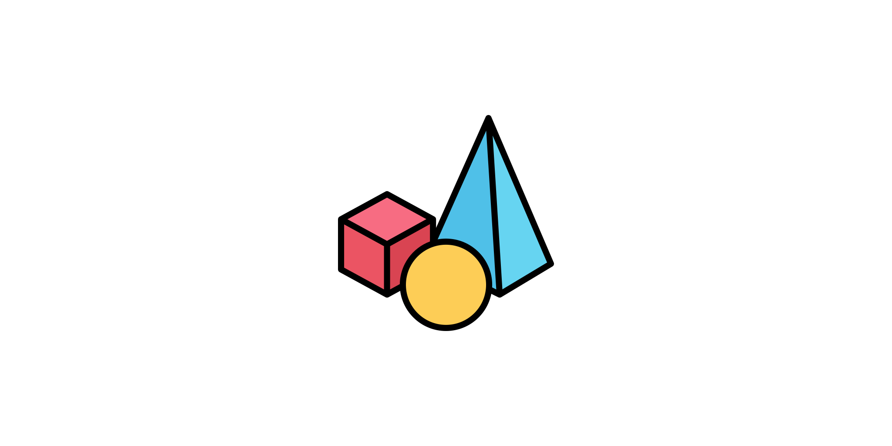

API Reference#
This section contains a detailed description of the functions, modules, and objects included in pycvcam. The reference describes how the methods work and which parameters can be used. It assumes that you have an understanding of the key concepts.
The API is organized into several sections, each corresponding to a specific aspect of the package.
Base Classes Transformations#
Abstract base classes and data classes#
The package provides a set of transformations that can be applied to process the transformation from the world_points to the image_points.
The structure of objects is given by the abstract classes stored in the pycvcam.core module.
The following base classes can be used to define new transformations by inheriting from them and implementing the required methods:
Transform: The base class for transformations, which defines the interface for applying transformations to points.
TransformResult: The data class for storing the results of transformations, which defines the structure for storing the transformed points and respected jacobians.
TransformComposition: The class for composing multiple transformations together, which defines the structure for storing and applying a sequence of transformations.
Intrinsic: The base class for intrinsic transformations, which defines the interface for applying intrinsic transformations to points.
Distortion: The base class for distortion transformations, which defines the interface for applying distortion transformations to points.
Extrinsic: The base class for extrinsic transformations, which defines the interface for applying extrinsic transformations to points.
Rays: The data class for storing rays, which defines the structure for storing the origin and direction of rays in 3D space.
Note
The each transformation model implemented in the package:
parametersrefers to the parameters of the transformation that are optimisable and the jacobians are computed with respect to these parameters.constantsrefers to the parameters of the transformation that are not optimisable and the jacobians are not computed with respect to these parameters.
Implemented transformations#

Implemented Extrinsic
This section provide the implemented Extrinsic transformation models in the package from
the world_points to the normalized_points.
Implemented Distortion
This section provide the implemented Distortion transformation models in the package from
the normalized_points to the distorted_points.
Implemented Intrinsic
This section provide the implemented Intrinsic transformation models in the package from
the distorted_points to the image_points.
Write and read transformations#
To save and load transformations, the package provides the following functions:
Write (write_transform): A function to save a transformation object to a Json file.
Read (read_transform): A function to load a transformation object from a Json file.
Process basic transformations with pycvcam#
The package pycvcam provides a set of transformation processes that can be used to apply the transformations to points or images.
The implemented processes are the following:
Distort and Undistort Images: A process to distort and undistort an image using a distortion model and an intrinsic model.
Undistort Points: A process to undistort points using a distortion model and an intrinsic model.
Project Points: A process to project points from the world coordinate system to the image coordinate system using an extrinsic model, a distortion model, and an intrinsic model.
Compute Rays: A process to compute rays from the camera center to the world points using an extrinsic model and a distortion model.
Compute Optical Flow: A process to compute the optical flow between two images using the DIS method of OpenCV.
See the section Usage for more details and examples on how to use these processes.
Optimisation processes#
The package provides a set of optimisation processes that can be used to estimate the parameters of the transformations.
The optimisations are located in the pycvcam.optimize module.
Optimize Parameters Least Squares: A process to optimize the parameters of a transformation or a camera model using a Scipy least squares optimization with bounds and scaling.
Optimize Input Points: A process to optimize the input points of a transformation using a least squares optimization.